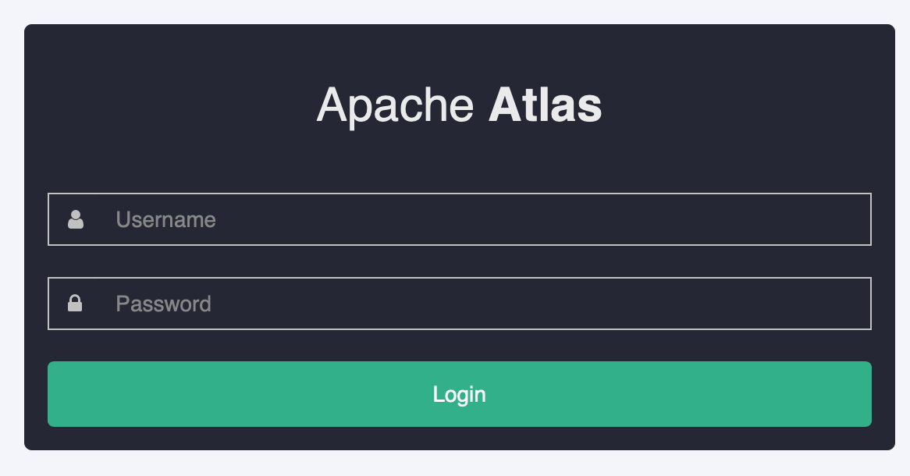
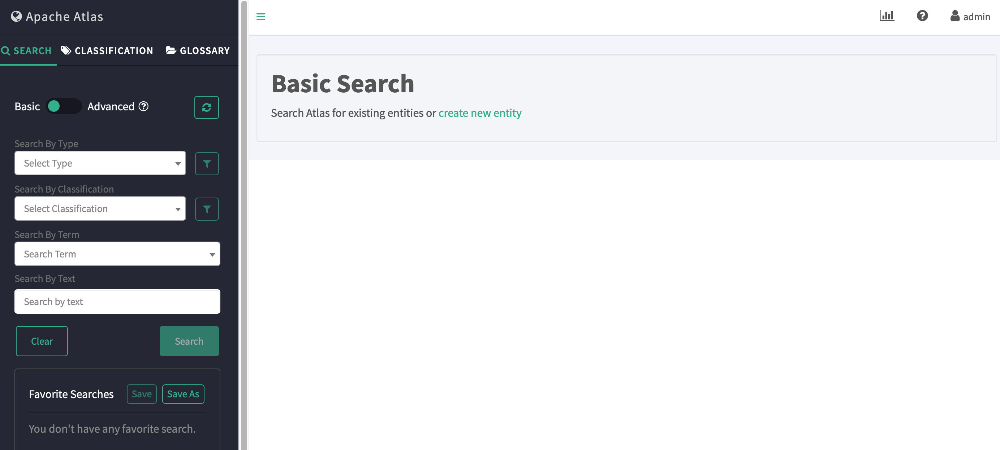

Atlas简介、安装
官方：http://atlas.apache.org/
一 简介
元数据管理：数据分类、数据血缘、数据治理
Atlas is a scalable and extensible set of core foundational governance services – enabling enterprises to effectively and efficiently meet their compliance requirements within Hadoop and allows integration with the whole enterprise data ecosystem.
Apache Atlas provides open metadata management and governance capabilities for organizations to build a catalog of their data assets, classify and govern these assets and provide collaboration capabilities around these data assets for data scientists, analysts and the data governance team.
二 安装
1 下载
# wget https://www.apache.org/dyn/closer.cgi/atlas/2.0.0/apache-atlas-2.0.0-sources.tar.gz
2 编译
# tar xvf apache-atlas-2.0.0-sources.tar.gz
# cd apache-atlas-2.0.0-sources
# mvn clean - DskipTests install
注意maven和java有最低版本限制
maven3.5.0
java1.8.151
编译完成
[INFO] ------------------------------------------------------------------------ [INFO] Reactor Summary: [INFO] [INFO] Apache Atlas Server Build Tools 1.0 ................ SUCCESS [ 0.460 s] [INFO] apache-atlas 2.0.0 ................................. SUCCESS [ 4.248 s] [INFO] Apache Atlas Test Utility Tools 2.0.0 .............. SUCCESS [ 8.609 s] [INFO] Apache Atlas Integration 2.0.0 ..................... SUCCESS [ 16.224 s] [INFO] Apache Atlas Common 2.0.0 .......................... SUCCESS [ 6.408 s] [INFO] Apache Atlas Client 2.0.0 .......................... SUCCESS [ 0.340 s] [INFO] atlas-client-common 2.0.0 .......................... SUCCESS [ 5.321 s] [INFO] atlas-client-v1 2.0.0 .............................. SUCCESS [ 5.371 s] [INFO] Apache Atlas Server API 2.0.0 ...................... SUCCESS [ 5.095 s] [INFO] Apache Atlas Notification 2.0.0 .................... SUCCESS [ 14.133 s] [INFO] atlas-client-v2 2.0.0 .............................. SUCCESS [ 11.227 s] [INFO] Apache Atlas Graph Database Projects 2.0.0 ......... SUCCESS [ 0.453 s] [INFO] Apache Atlas Graph Database API 2.0.0 .............. SUCCESS [ 10.108 s] [INFO] Graph Database Common Code 2.0.0 ................... SUCCESS [ 7.904 s] [INFO] Apache Atlas JanusGraph-HBase2 Module 2.0.0 ........ SUCCESS [ 8.784 s] [INFO] Apache Atlas JanusGraph DB Impl 2.0.0 .............. SUCCESS [ 13.466 s] [INFO] Apache Atlas Graph Database Implementation Dependencies 2.0.0 SUCCESS [ 1.949 s] [INFO] Apache Atlas Authorization 2.0.0 ................... SUCCESS [ 5.845 s] [INFO] Apache Atlas Repository 2.0.0 ...................... SUCCESS [ 26.568 s] [INFO] Apache Atlas UI 2.0.0 .............................. SUCCESS [04:17 min] [INFO] Apache Atlas Web Application 2.0.0 ................. SUCCESS [08:44 min] [INFO] Apache Atlas Documentation 2.0.0 ................... SUCCESS [01:47 min] [INFO] Apache Atlas FileSystem Model 2.0.0 ................ SUCCESS [ 2.820 s] [INFO] Apache Atlas Plugin Classloader 2.0.0 .............. SUCCESS [ 4.165 s] [INFO] Apache Atlas Hive Bridge Shim 2.0.0 ................ SUCCESS [01:03 min] [INFO] Apache Atlas Hive Bridge 2.0.0 ..................... SUCCESS [01:38 min] [INFO] Apache Atlas Falcon Bridge Shim 2.0.0 .............. SUCCESS [ 53.172 s] [INFO] Apache Atlas Falcon Bridge 2.0.0 ................... SUCCESS [ 12.770 s] [INFO] Apache Atlas Sqoop Bridge Shim 2.0.0 ............... SUCCESS [ 29.425 s] [INFO] Apache Atlas Sqoop Bridge 2.0.0 .................... SUCCESS [ 14.340 s] [INFO] Apache Atlas Storm Bridge Shim 2.0.0 ............... SUCCESS [ 31.160 s] [INFO] Apache Atlas Storm Bridge 2.0.0 .................... SUCCESS [ 6.921 s] [INFO] Apache Atlas Hbase Bridge Shim 2.0.0 ............... SUCCESS [ 5.872 s] [INFO] Apache Atlas Hbase Bridge 2.0.0 .................... SUCCESS [ 44.294 s] [INFO] Apache HBase - Testing Util 2.0.0 .................. SUCCESS [ 5.072 s] [INFO] Apache Atlas Kafka Bridge 2.0.0 .................... SUCCESS [ 12.537 s] [INFO] Apache Atlas Distribution 2.0.0 .................... SUCCESS [ 6.095 s] [INFO] ------------------------------------------------------------------------ [INFO] BUILD SUCCESS [INFO] ------------------------------------------------------------------------ [INFO] Total time: 23:53 min [INFO] Finished at: 2019-12-15T02:37:56+08:00 [INFO] ------------------------------------------------------------------------
如果使用内置的hbase和solor，修改编译参数如下
# mvn clean - DskipTests package - Pdist,embedded-hbase-solr
编译完成
[INFO] ------------------------------------------------------------------------ [INFO] Reactor Summary: [INFO] [INFO] Apache Atlas Server Build Tools 1.0 ................ SUCCESS [ 0.809 s] [INFO] apache-atlas 2.0.0 ................................. SUCCESS [ 7.569 s] [INFO] Apache Atlas Test Utility Tools 2.0.0 .............. SUCCESS [ 5.851 s] [INFO] Apache Atlas Integration 2.0.0 ..................... SUCCESS [ 5.331 s] [INFO] Apache Atlas Common 2.0.0 .......................... SUCCESS [ 1.877 s] [INFO] Apache Atlas Client 2.0.0 .......................... SUCCESS [ 0.180 s] [INFO] atlas-client-common 2.0.0 .......................... SUCCESS [ 0.871 s] [INFO] atlas-client-v1 2.0.0 .............................. SUCCESS [ 0.841 s] [INFO] Apache Atlas Server API 2.0.0 ...................... SUCCESS [ 1.282 s] [INFO] Apache Atlas Notification 2.0.0 .................... SUCCESS [ 2.491 s] [INFO] atlas-client-v2 2.0.0 .............................. SUCCESS [ 0.777 s] [INFO] Apache Atlas Graph Database Projects 2.0.0 ......... SUCCESS [ 0.074 s] [INFO] Apache Atlas Graph Database API 2.0.0 .............. SUCCESS [ 1.157 s] [INFO] Graph Database Common Code 2.0.0 ................... SUCCESS [ 0.924 s] [INFO] Apache Atlas JanusGraph-HBase2 Module 2.0.0 ........ SUCCESS [ 1.499 s] [INFO] Apache Atlas JanusGraph DB Impl 2.0.0 .............. SUCCESS [ 4.756 s] [INFO] Apache Atlas Graph Database Implementation Dependencies 2.0.0 SUCCESS [ 1.388 s] [INFO] Apache Atlas Authorization 2.0.0 ................... SUCCESS [ 1.554 s] [INFO] Apache Atlas Repository 2.0.0 ...................... SUCCESS [ 9.838 s] [INFO] Apache Atlas UI 2.0.0 .............................. SUCCESS [01:08 min] [INFO] Apache Atlas Web Application 2.0.0 ................. SUCCESS [ 52.064 s] [INFO] Apache Atlas Documentation 2.0.0 ................... SUCCESS [ 4.832 s] [INFO] Apache Atlas FileSystem Model 2.0.0 ................ SUCCESS [ 2.084 s] [INFO] Apache Atlas Plugin Classloader 2.0.0 .............. SUCCESS [ 0.717 s] [INFO] Apache Atlas Hive Bridge Shim 2.0.0 ................ SUCCESS [ 3.103 s] [INFO] Apache Atlas Hive Bridge 2.0.0 ..................... SUCCESS [ 10.010 s] [INFO] Apache Atlas Falcon Bridge Shim 2.0.0 .............. SUCCESS [ 1.386 s] [INFO] Apache Atlas Falcon Bridge 2.0.0 ................... SUCCESS [ 1.348 s] [INFO] Apache Atlas Sqoop Bridge Shim 2.0.0 ............... SUCCESS [ 0.246 s] [INFO] Apache Atlas Sqoop Bridge 2.0.0 .................... SUCCESS [ 6.169 s] [INFO] Apache Atlas Storm Bridge Shim 2.0.0 ............... SUCCESS [ 0.335 s] [INFO] Apache Atlas Storm Bridge 2.0.0 .................... SUCCESS [ 1.968 s] [INFO] Apache Atlas Hbase Bridge Shim 2.0.0 ............... SUCCESS [ 1.834 s] [INFO] Apache Atlas Hbase Bridge 2.0.0 .................... SUCCESS [ 5.859 s] [INFO] Apache HBase - Testing Util 2.0.0 .................. SUCCESS [ 3.876 s] [INFO] Apache Atlas Kafka Bridge 2.0.0 .................... SUCCESS [ 1.670 s] [INFO] Apache Atlas Distribution 2.0.0 .................... SUCCESS [03:31 min] [INFO] ------------------------------------------------------------------------ [INFO] BUILD SUCCESS [INFO] ------------------------------------------------------------------------ [INFO] Total time: 07:08 min [INFO] Finished at: 2019-12-15T19:08:07+08:00 [INFO] ------------------------------------------------------------------------
3 安装
# ls distro/target
apache-atlas-2.0.0-bin.tar.gz
拷贝到安装服务器解压
# ls
bin conf data DISCLAIMER.txt docs hbase hook hook-bin LICENSE logs models NOTICE server solr tools
默认配置：使用hbase自带zookeeper，使用内置的hbase和solr
# vi conf/atlas-env.sh # indicates whether or not a local instance of HBase should be started for Atlas export MANAGE_LOCAL_HBASE=true # indicates whether or not a local instance of Solr should be started for Atlas export MANAGE_LOCAL_SOLR=true # vi hbase/conf/hbase-env.sh # Tell HBase whether it should manage it's own instance of ZooKeeper or not. # export HBASE_MANAGES_ZK=true
如果要修改，除了以上配置，还要修改
# vi conf/atlas-application.properties ## Server port configuration atlas.server.http.port=21000
这个配置文件包含启动端口以及zookeeper、hbase、solr相关配置
4 启动
# bin/atlas_start.py
确认服务是否正常
# jps
4.1 zookeeper
# echo stat|nc localhost 2181
4.2 hbase
# hbase/bin/hbase shell
4.3 solr
# solr/bin/solr status
如果有个别组件启动失败，可以手工启动
1）hbase
# hbase/bin/start-hbase.sh
2）solr
# solr/bin/solr start - c - z localhost:2181 - p 8983 - force
# solr/bin/solr create - c fulltext_index - force - d conf/solr/
# solr/bin/solr create - c edge_index - force - d conf/solr/
# solr/bin/solr create - c vertex_index - force - d conf/solr/
5 访问
http://localhost:21000，账号密码：admin/admin

登录之后

6 修改账号密码
# cat conf/users-credentials.properties
#username=group::sha256-password
admin=ADMIN::8c6976e5b5410415bde908bd4dee15dfb167a9c873fc4bb8a81f6f2ab448a918
rangertagsync=RANGER_TAG_SYNC::e3f67240f5117d1753c940dae9eea772d36ed5fe9bd9c94a300e40413f1afb9d
加密地址：https://tool.oschina.net/encrypt?type=2
修改之后重启；
ps：hbase可能启动失败，查看日志
hbase/logs/hbase*.log
2020-01-11 12:49:43,613 ERROR [Thread-22] master.HMaster: Failed to become active master java.lang.IllegalStateException: The procedure WAL relies on the ability to hsync for proper operation during component failures, but the underlying filesystem does not support doin g so. Please check the config value of 'hbase.procedure.store.wal.use.hsync' to set the desired level of robustness and ensure the config value of 'hbase.wal.dir' points to a FileSy stem mount that can provide it. at org.apache.hadoop.hbase.procedure2.store.wal.WALProcedureStore.rollWriter(WALProcedureStore.java:1044) at org.apache.hadoop.hbase.procedure2.store.wal.WALProcedureStore.recoverLease(WALProcedureStore.java:383) at org.apache.hadoop.hbase.procedure2.ProcedureExecutor.init(ProcedureExecutor.java:649) at org.apache.hadoop.hbase.master.HMaster.createProcedureExecutor(HMaster.java:1282) at org.apache.hadoop.hbase.master.HMaster.finishActiveMasterInitialization(HMaster.java:842) at org.apache.hadoop.hbase.master.HMaster.startActiveMasterManager(HMaster.java:2086) at org.apache.hadoop.hbase.master.HMaster.lambda$run$0(HMaster.java:553) at java.lang.Thread.run(Thread.java:748) 2020-01-11 12:49:43,614 ERROR [Thread-22] master.HMaster: ***** ABORTING master dataone-004,61500,1578718180228: Unhandled exception. Starting shutdown. ***** java.lang.IllegalStateException: The procedure WAL relies on the ability to hsync for proper operation during component failures, but the underlying filesystem does not support doin g so. Please check the config value of 'hbase.procedure.store.wal.use.hsync' to set the desired level of robustness and ensure the config value of 'hbase.wal.dir' points to a FileSy stem mount that can provide it. at org.apache.hadoop.hbase.procedure2.store.wal.WALProcedureStore.rollWriter(WALProcedureStore.java:1044) at org.apache.hadoop.hbase.procedure2.store.wal.WALProcedureStore.recoverLease(WALProcedureStore.java:383) at org.apache.hadoop.hbase.procedure2.ProcedureExecutor.init(ProcedureExecutor.java:649) at org.apache.hadoop.hbase.master.HMaster.createProcedureExecutor(HMaster.java:1282) at org.apache.hadoop.hbase.master.HMaster.finishActiveMasterInitialization(HMaster.java:842) at org.apache.hadoop.hbase.master.HMaster.startActiveMasterManager(HMaster.java:2086) at org.apache.hadoop.hbase.master.HMaster.lambda$run$0(HMaster.java:553) at java.lang.Thread.run(Thread.java:748)
需要修改hbase/conf/hbase-site.xml，添加
<property>
<name>hbase.unsafe.stream.capability.enforce</name>
<value>false</value>
</property>
然后启动成功。